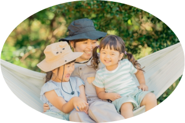
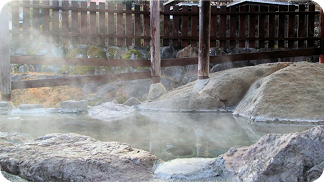
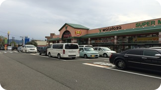
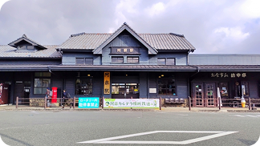

自然とあそぼう！
山のキャンプ場にようこそ
山と川に囲まれた、山のキャンプ場は 都心からわずか1時間のファミリー向けの オートキャンプ場です。 利用者は、ファミリー・ソロキャンプが中心で 小さい子供がいても安心してご利用いただけます。
施設案内

山のキャンプ場には、ケビン、テントサイトなどの 宿泊施設やどなたでもご利用いただける 浴場や食堂、売店などがあります。
施設について詳しくはこちら周辺情報

山川温泉センター
キャンプ場より車で10分ほどの場所にある源泉かけ流しの温泉施設です。 弱アルカリ性の柔らかい湯に浸かれば、 心と体がゆったりとほぐれていきます。

山川スーパー
食材をお求めならこちらへ。 食材だけでなく、歯ブラシなどの日用品もございます。

山川道の駅
この地域の特産品ならこちら！ 地元野菜や、手作りハム・ ソーセージを 直売しております。 レストランや軽食コーナーも ございます。 特産品の山川牛はぜひこちらでお買い求めください。